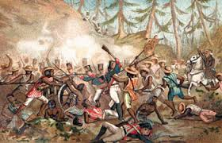

LA BATALLA DEL MONTE DE LAS CRUCESEn la Batalla del Monte de las Cruces, ocurrida el 30 de octubre de 1810, el ejército insurgente comandado por Miguel Hidalgo e Ignacio Allende avanzó desde Toluca con la intención de acercarse a la Ciudad de México, que en ese momento era el centro del poder virreinal. Las fuerzas realistas, dirigidas por Torcuato Trujillo, decidieron detenerlos en una zona montañosa estratégica, aprovechando la dificultad del terreno para compensar su menor número de tropas. El sitio donde se desarrolló la batalla estaba cubierto de bosques densos, caminos estrechos y pendientes pronunciadas, lo que hacía difícil el desplazamiento de grandes grupos y complicaba la comunicación entre las unidades. Esta geografía influyó directamente en el desarrollo del combate, ya que impedía maniobras ordenadas y favorecía enfrentamientos dispersos. Los realistas llegaron primero al lugar y prepararon posiciones defensivas, colocando su artillería en puntos elevados desde donde podían disparar contra los insurgentes que ascendían. Con esto, buscaban debilitar al enemigo antes de que pudiera acercarse lo suficiente para un combate directo. Cuando los insurgentes llegaron, comenzaron a avanzar en grandes grupos, sin una formación estricta, impulsados más por el entusiasmo y la urgencia que por una estrategia militar organizada. Aunque carecían de disciplina, su gran número les permitió cubrir varios flancos al mismo tiempo. |
 |
|
|---|---|---|
Los primeros momentos del combate estuvieron dominados por el fuego de los realistas, quienes utilizaban cañones y fusiles para intentar dispersar a las masas insurgentes. Esto causó bajas importantes entre los atacantes, pero no fue suficiente para detener su avance. Los insurgentes continuaron avanzando a pesar del peligro, lo que obligó a los realistas a mantener un fuego constante. Sin embargo, la cantidad de atacantes hacía difícil contenerlos completamente, ya que mientras unos caían, otros seguían avanzando. A medida que la distancia se reducía, los insurgentes comenzaron a aprovechar los elementos naturales del terreno para cubrirse, como árboles y rocas. Esto disminuyó la efectividad de los disparos realistas y permitió que se acercaran más a las posiciones enemigas. Con el paso de las horas, los insurgentes lograron presionar distintos puntos de las líneas realistas al mismo tiempo. Esta presión constante empezó a romper la capacidad de organización del ejército defensor.
En varios sectores del campo de batalla, los insurgentes consiguieron superar las defensas y entrar en contacto directo con los realistas. Esto marcó el inicio de combates cuerpo a cuerpo, donde la superioridad técnica de los realistas se reducía considerablemente. Durante estos enfrentamientos cercanos, la lucha se volvió caótica, con enfrentamientos individuales o en pequeños grupos. Los insurgentes utilizaban machetes, palos y cualquier objeto disponible como arma, mientras que los realistas intentaban mantener cierta organización. El número de insurgentes se convirtió en el factor decisivo, ya que podían rodear a pequeños grupos de soldados realistas y superarlos por cantidad. Esto obligó a los realistas a retroceder gradualmente en diferentes puntos. Al perder posiciones clave, las fuerzas realistas comenzaron a ver comprometida su defensa general. Cada retirada parcial debilitaba al conjunto del ejército y facilitaba el avance insurgente.
Los intentos de reorganización de los realistas fueron cada vez más difíciles debido a la presión constante y a la desorganización provocada por el terreno. La comunicación entre sus unidades se volvió limitada. Mientras tanto, los insurgentes continuaban atacando sin cesar, aprovechando cualquier oportunidad para avanzar. No seguían un plan detallado, pero su insistencia mantenía la iniciativa de su lado. Conforme avanzaba la batalla, el desgaste físico y la disminución de efectivos afectaron seriamente a las tropas realistas. Su capacidad para sostener la defensa comenzó a colapsar. Finalmente, al ver que no podían contener el ataque y que corrían el riesgo de ser totalmente derrotados, los realistas tomaron la decisión de retirarse del campo de batalla. Esta retirada fue desordenada en algunos puntos.
Los insurgentes ocuparon las posiciones abandonadas y tomaron el control del terreno. Aunque no tenían una estructura formal para consolidar rápidamente su victoria, lograron mantenerse en el lugar. Después del combate, el área del Monte de las Cruces quedó bajo control insurgente, lo que representó una ruptura importante en la línea defensiva que protegía el acceso al Valle de México. El resultado inmediato fue que no había una fuerza realista suficientemente fuerte entre los insurgentes y la Ciudad de México. Esto convirtió la victoria en una oportunidad estratégica muy importante. La batalla terminó con los insurgentes en posesión del campo y con el camino abierto hacia la capital, marcando uno de los momentos más cercanos en los que el movimiento insurgente estuvo de entrar directamente a la Ciudad de México tras una victoria militar.